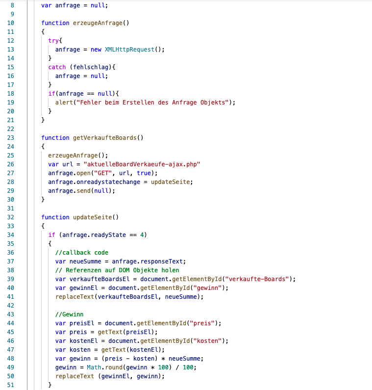
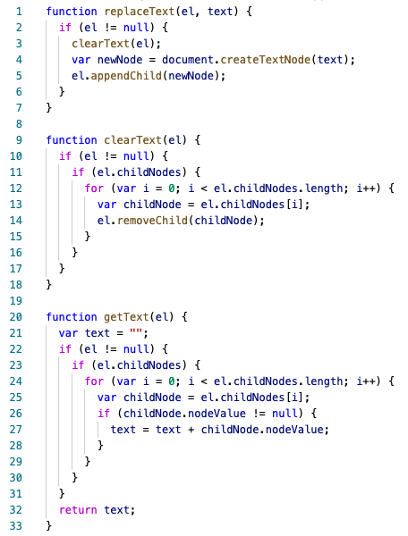

Die heutige Vorlesung war unsere letzte Vorlesung in Webprogrammierung im dritten Semester. Dabei haben wir uns mit dem Einsatz von AJAX in der Webentwicklung beschäftigt und dies sehr ausführlich in einer Übung praktisch umgesetzt.
Der Unterschied von früher zu heute liegt in AJAX und dem erstellen von asynchronen JavaScript Webanwendungen, die interaktiver und reaktionsschneller sind. AJAX bringt dabei den Vorteil mit sich, dass die Webanwendung schneller reagiert, was wiederum die Usability steigert. Früher, wie in 1999, füllte ein Nutzer ein HTML Formular aus, draufhin wurde eine Anfrage an den Server geschickt. Dieser beantwortete die Anfrage und schikte eine neue aktualisierte HTML-Seite an den Client zurück. Wie bereits erwähnt führte dies zu hohen Wartezeiten. Die Lösung für die hohe Wartezeit ist, dass die Anfrage an den Server von einer JavaScript Funktion übernommen wird. Dadurch gibt der Webserver nur die Daten zurück die er braucht und das Design wird nicht neu mitgeschickt, denn mit Hilfe von JavaScript aktualisiert sich die Webseite dynamisch und der Webserver braucht keine Informationen zum Design, sondern lediglich Informationen Daten und Dokumente die verändert werden sollen.
Übersichtlich sieht das dabei dann so aus:
Wie im oberen Abschnitt bereits erläutert, sind die Anwendungen somit dynamischer, jedoch könnte man vermuten, dass immernoch Wartezeit auf den JavaScript-Code besteht. Dieses Problem löst AJAX dadurch, dass es asynchron ist. Dies ermöglicht es, dass während JavaScript eine Anfrage an den Server schickt, der Nutzer weiterhin Eingaben vornehmen oder Buttons klicken kann. Nachdem der Server die Anfrage bearbeitet und eine Antwort gesendet hat, aktualisiert sich dann der "betrofffene" Teil der Seite.
AJAX ermöglicht somit zusammengefasst die Kommunikation zu einem Webserver, um Daten laden oder übertragen zu können, ohne dass dabei das Dokument gewechselt werden musss.
Die callback functions oder in deutsch Rückruffunktionen sind Funktionen die anderen Funktionen als Parameter übergeben werden. Vorzugsweise bearbeiten callback-Funktionen dabei das Ergebnis asynchroner Funktionen.
Der Einsatz von callback-Funktionen wird in einem konkreten Beispiel auf sebastianviereck.de beschrieben und folgt im nächsten Abschnitt Übung: Online Snowboard-Shop.
Den Einsatz von AJAX und die Verwendung von PHP haben wir und dabei in einem Beispiel für einen Online Snowboard-Shop genauer angeschaut. Dabei hatten wir keinen Webserver zur Ausführung parat, deshalb nur ein Stück Code der boards.html Datei:

Im oberen Code ist gut zu erkennen, durch den Kommentar in Zeile 36, dass in Zeile 37 callback-Code steht. Hierbei wird innerhalb der Funktion updateSeite() die Funktion responseText aufgerufen. Außerdem wird innheralb der Funktion updateSeite() auch die Funktion replaceText in Zeile 41 und 50 aufgerufen. Diese Funktion ist in der JavaScript-Datei definiert. Folglich hier der Code der text-utils.js Datei:
